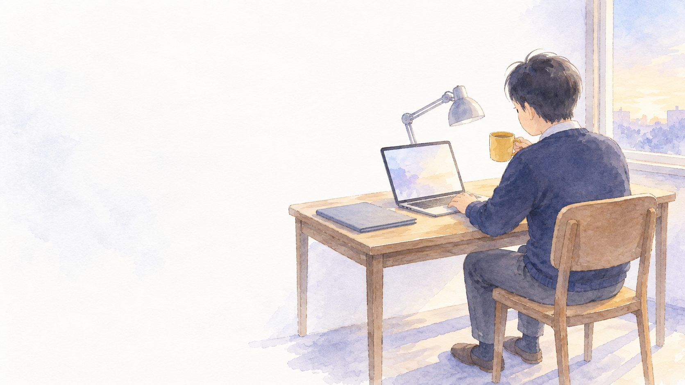
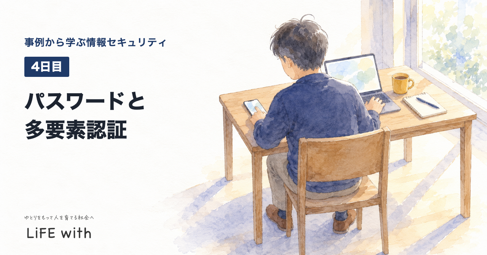
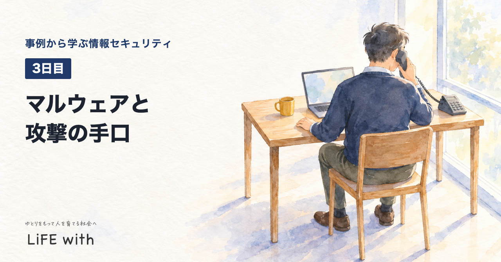
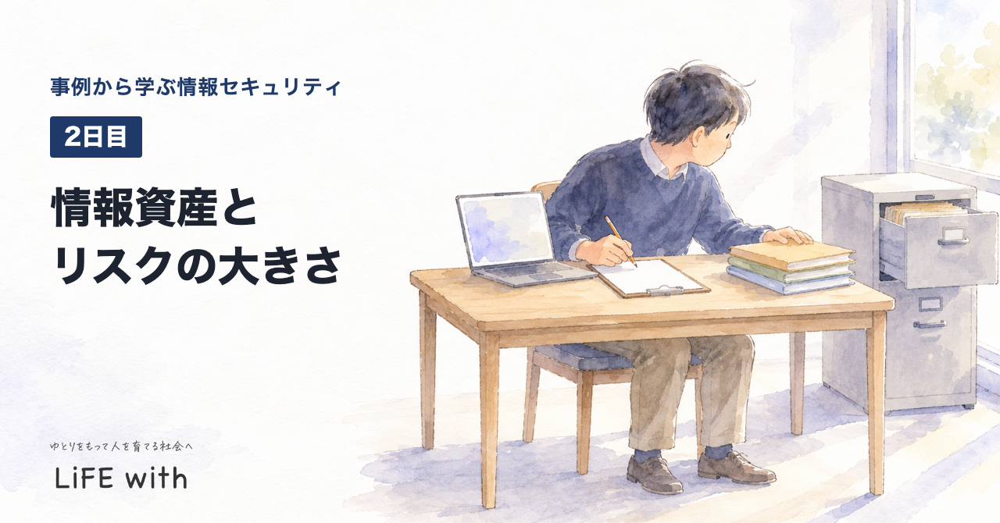
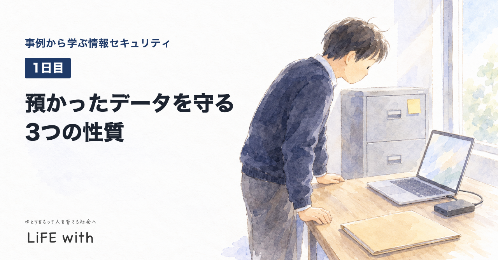

LiFE with 事例から学ぶ情報セキュリティ
小さな事務所で、パソコンとデータを守る役目を任された人のための、毎日の学びの記録です。情報セキュリティマネジメント試験の範囲にそって、国や公的機関が公開した資料、法律の条文、試験の過去問をもとに、ラジオ、動画、図解で学びます。
毎日の学び

4日目パスワードと多要素認証
3日目マルウェアと攻撃の手口
2日目情報資産とリスクの大きさ
1日目預かったデータを守る3つの性質学び方
| 順番 | やること |
|---|---|
| 1 | 今日の問いを3つ聞いて、まず自分で考える |
| 2 | 公開された事例を聞く |
| 3 | 言葉の意味を、国の資料と条文で確かめる |
| 4 | 板書と図解で整理する |
| 5 | 自分の事務所に置き換えて考える |
| 6 | 答え合わせをして、過去問を3問解く。3日後・7日後・21日後に復習する |
試験の範囲は、IPAが公開しているシラバスにそって分野を決めています。週ごとに中心の分野を決め、ほかの分野の問いも混ぜて出します。
専門家と国が発信している情報
このサイトは学びの記録です。正確な内容は、次の一次資料で確かめてください。
試験
- 情報セキュリティマネジメント試験
独立行政法人 情報処理推進機構（IPA） - 過去問題
独立行政法人 情報処理推進機構（IPA） - 試験要綱・シラバス
独立行政法人 情報処理推進機構（IPA）
国と公的機関の手引き
- 情報セキュリティ10大脅威 2026
独立行政法人 情報処理推進機構（IPA） - 中小企業の情報セキュリティ対策ガイドライン
独立行政法人 情報処理推進機構（IPA） - 国民のためのサイバーセキュリティサイト
総務省 - インターネットの安全・安心ハンドブック
国家サイバー統括室 - 個人情報保護法ガイドライン（通則編）
個人情報保護委員会
法令（e-Gov法令検索）
- 個人情報の保護に関する法律
デジタル庁 e-Gov法令検索
このサイトについて
私が、情報セキュリティマネジメント試験の受験勉強として毎日作っているものを、そのまま公開しています。
資格を目指す人だけでなく、小さな事務所や学校でパソコンとデータを守る役目を任された人にも使えるように作っています。
学校の仕事とは別に、自分の時間で作っています。勤務先やお客さまの情報は扱いません。
教材は生成AI（Claude）を使って作り、出典と照らし合わせて確かめています。事例は国や公的機関が公開した資料の要約です。法律や契約の判断が必要なときは、専門家に相談してください。
© LiFE with 絵：野々宮すみれ（LiFE withの素材スタジオ）